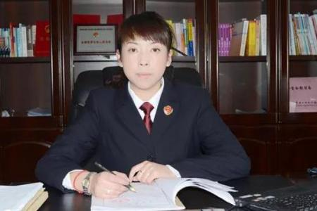

Home Page>>Comments
Chen yongjie: the most beautiful "gersan flowers" on the snowy plateau

Yong-jie Chen is golmud in qinghai province people's procuratorate of the procuratorial committee staff members, the prosecution superintendent, in recent years won the "national outstanding communist party member", "national model prosecutors", "the national most beautiful - the crowd favorite prosecutors", the first "watchman justice -- the crowd favorite prosecutors", "national worker", personal merit citation class ii, and other honors.
She is a worthy match in the eyes of lawyers
Since middle school, Chen yongjie has been following his father, a prosecutor, and interested in court proceedings. When he became a prosecutor, Chen grew rapidly from a nervous courtroom to a sweaty palm to the youngest prosecution expert in qinghai province.
Real strength, this is with Chen yongjie had dealt with people, to her a common evaluation. Family grudges for a long time together in the examination and prosecution cases of malignant group fights, yong-jie Chen seriously examine the case facts and evidence, and in accordance with the law of all seven defendants change qualitative entire case, such as qi a 4 people from deliberate damage to affrays translational deliberately harm (to death), the defendant ma affrays sin by intentional injury instead, manhole a defendant, concealing stolen goods instead of qi so-and-so from the crime of concealing the murder.
During the trial, a defense attorney pleaded not guilty and the accused distorted his facts. To this, Chen yongjie made full use of the evidence, one by one refuted the defender's point of view. The court eventually adopted all the qualitative and sentencing recommendations of the procuratorial organs, and imposed heavier penalties on the defendants who had clear criminal facts and solid evidence, but still did not show remorse.
At the end of the trial, a lawyer who had faced off in court sent a message to Chen yongjie: "I admire your ability and level of defense."
Geermu yancheng law firm director ma fuxin similarly believed that Chen yongjie is a well-deserved "good opponent".
One case in 2009, in which 11 people were deliberately injured and killed, had six huge volumes of material, totaling more than 700 pages. "The feeling is that when you look at the back of the file you forget what was in front of you. Said malfoy. < br / >
In the trial, ma fuxin found that Chen yongjie, referring to any of the defendants, could make it clear what facts were involved and which pages were corresponding to the files. "I feel like she's seen the files at least 10 times, and that dedication is worth learning." Said malfoy.
She is a very good researcher in the eyes of her colleagues
Speaking of Chen yongjie's diligence, Chen xinhua said he was the most vocal. Chen xinhua is a senior prosecutor of public prosecution in the public prosecutor's office of golmud city, as well as Chen yongjie's "master of introduction", which witnessed Chen yongjie's first six or seven years of growth in the public prosecution team. Chen xinhua used to be the leader of Chen yongjie, from her admission into the hospital to see her step by step growth. Chen yongjie is diligent and serious, he said. After years of efforts, she has developed excellent professional skills and excellent language expression skills, especially her ability to make the three parties satisfied in public prosecution is very valuable. "At first, as a leader, he looked down on Chen yongjie. Gradually, they began to look up, but now he is looking up at her," he joked.
Chen xinhua's evaluation, said Chen yongjie in the eyes of colleagues eager to learn image. In November 2013, Chen yongjie was awarded the title of "provincial procuratorial business expert" by the qinghai provincial procuratorate, becoming the youngest procuratorial business expert in the province. Li chunqi, deputy chief prosecutor of geermu procuratorate, said that Chen yongjie is a person who is good at studying and pursues a comprehensive grasp of every case she deals with, which makes her able to cope with the sudden "attack" of a lawyer by her usual legal knowledge and sufficient preparations.
"To safeguard the fairness and justice of the law, thousands of public prosecutors with high quality and ability are indispensable." As the head of the public prosecution department, Chen yongjie also attaches great importance to the common progress of the whole team. In the office of public prosecution, there are two books on everyone's desk all year round. Li zhijuan, a young prosecutor in the public prosecution department, said that under Chen yongjie's leadership, everyone's learning momentum is very full.